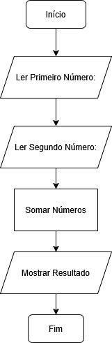
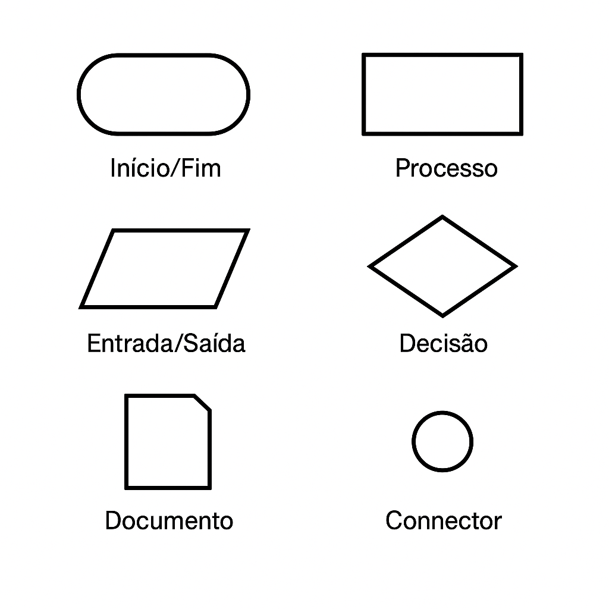
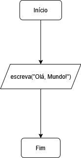
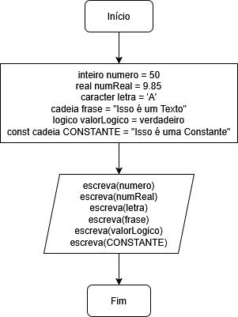
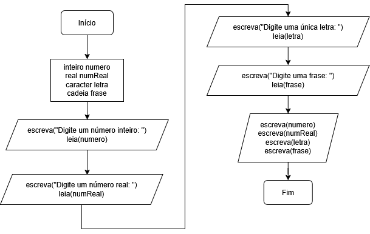

Um algoritmo é uma sequência de passos organizados e claros que servem para resolver um problema ou realizar uma tarefa. É como uma receita: Você segue cada passo, na ordem certa, até chegar ao resultado final. O computador só consegue trabalhar porque seguimos essa lógica passo a passo.
Aqui vai um exemplo simples de algoritmo do cotidiano, usando o ato de tomar banho:
Aqui vai um exemplo simples de algoritmo na computação, usando a lógica de funcionamento da calculadora do Windows ao realizar uma soma:
+.
=.
Isso é um algoritmo: Passos claros, executados sempre na mesma ordem, até chegar ao resultado.
Um fluxograma é uma forma gráfica de representar um algoritmo, usando símbolos (como caixas, setas e losangos) para mostrar o caminho que os passos seguem. Ele ajuda a visualizar a lógica de uma tarefa de maneira simples e organizada.
Veja um fluxograma sobre a soma citada anteriormente:
Esses são os símbolos básicos de um fluxograma:
Podemos usar um site como esse pra criar nossos próprios fluxogramas: https://app.diagrams.net/
Portugol é uma linguagem de pseudocódigo escrita em português, criada para ajudar iniciantes a aprender lógica de programação de forma simples. No Portugol Studio, você escreve programas usando comandos intuitivos, como leia
, escreva
, se
, enquanto
, etc.
O código escrito para criar um programa é chamado de código-fonte. Ele fica salvo em um arquivo com uma extensão específica que o interpretador entende. No caso do Portugol Studio, a extensão usada é .por
. Cada linguagem tem suas extensões específicas para seus arquivos de código-fonte.
Para baixar o Portugol Studio, devemos ir nesse site, que tem opções para Windows, Linux e Mac: https://univali-lite.github.io/Portugol-Studio/
Podemos também usar uma ferramenta online, que permite executar por qualquer dispositivo, até mesmo tablets e celulares: http://portugol.professorisidro.com.br:3000/ide
A estrutura básica de um programa no Portugol é essa:
programa {
funcao inicio() {
}
}
As chaves formam um bloco, indicando o que pertence à parte programa
e o que pertence à função inicio
(pense nos blocos como a caixa
que guarda todo o conteúdo, e que um bloco pode estar dentro do outro).
O bloco programa é a estrutura de onde o programa começa, onde tem uma função chamada inicio que é a que o interpretador do Portugol executa primeiramente por padrão, e basicamente nosso programa é feito dentro dela. Por padrão, toda função têm parênteses, que podem ou não receber argumentos, coisa que veremos mais pra frente.
A função escreva serve para mostrar algo na tela. Tudo o que você colocar dentro dos parênteses dela, será exibido para o usuário. Por padrão, ela deve ser executada dentro de inicio. Como ela é uma invocação de uma função, não tem blocos com chaves.
Exemplo resumido de Olá, Mundo
no Portugol Studio:
programa {
funcao inicio() {
escreva("Olá, Mundo!")
}
}
O Olá, Mundo!
fica entre aspas duplas porque é um texto (conhecido também como cadeia de caracteres
na programação), e textos sempre precisam estar entre aspas duplas para o computador entender que aquilo não é um comando, e sim uma mensagem que deve ser mostrada exatamente como está escrita.
PS: Dizem que, no mundo da programação, quem não conseguir fazer o código-fonte escrever Olá, Mundo
na tela, nunca vai conseguir aprender essa tecnologia, por isso, por tradição, este é o primeiro programa a se fazer ao aprender uma nova linguagem.
Veja o fluxograma do Olá, Mundo:
Variáveis são como caixinhas onde guardamos valores que podem mudar durante o programa. Por padrão, uma variável simples só pode guardar um valor por vez. O valor pode ser alterado em qualquer parte do programa, e nesse caso ele substitui o valor anterior. Uma variável pode ser inicializada com um valor pré-definido, mas isso não é obrigatório, podendo ter o valor atribuído em outras partes do programa.
As constantes funcionam da mesma forma, no entanto, seu valor não pode ser alterado, e por isso, obrigatoriamente elas terão que ser inicializadas com um valor já atribuído, que é permanente.
Por regra, as variáveis e constantes são locais, ou seja, elas só existem dentro de uma função, como no caso, a inicio. Podemos ter variáveis globais que são declaradas fora de funções e estas são vistas por todo o programa, mas isso será visto mais pra frente.
Os tipos primitivos padrão das variáveis e constantes são esses:
| Tipo Primitivo | Significado | Exemplos |
|---|---|---|
| Inteiro | Números inteiros | 0, 7, -15, 200 |
| Real | Números com casa decimal | 3.14, 9.85, -2.5 |
| Caracter | Caracter único | 'A', 'b', '7' |
| Cadeia | Textos no geral | "Olá", "Isso é um texto" |
| Lógico | Apenas Verdadeiro ou Falso | verdadeiro, falso |
Note que a cada decimal dos números reais são representadas por um ponto, e não por uma vírgula, nas linguagens de programação.
Note que os caracteres são representados sempre entre aspas, conforme explicado, pro computador saber que se trata de algo que deve ser exibido de forma literal. O caracter só guarda um caracter único e deve estar sempre entre aspas simples, já as cadeias de caracteres (textos) sempre deverão estar entre aspas duplas. Os outros tipos de dados (inteiro, real e logico) não devem ter aspas de nenhum tipo, caso um dado desses esteja entre aspas (como por exemplo, "45" ou "falso") ele é considerado texto (ou seja, cadeia de caracteres).
A nomeação de variáveis e constantes seguem determinadas regras:
_), no entanto, não pode começar com um número, sempre deve começar com uma letra. A partir do segundo caractere pode ter números e underlines.
#,
@,
!, etc.
funcao, escreva, se, enquanto e outras que veremos mais pra frente, incluindo as palavras já vistas como inteiro, caracter e logico).Alguns nomes aceitos:
idade
n1
soma
preco
total_vendas
Também, para identificação e leitura mais precisa, é ideal seguir também essas regras:
soma_total ou somaTotal.CPF ou TAXA_DESCONTO.idade faz mais sentido do que uma variável com o nome x).Usando os mesmos dados com variáveis:
programa {
funcao inicio() {
inteiro numero = 50
real numReal = 9.85
caracter letra = 'A'
cadeia frase = "Isso é um Texto"
logico valorLogico = verdadeiro
const cadeia CONSTANTE = "Isso é uma Constante"
escreva(numero + "\n")
escreva(numReal + "\n")
escreva(letra + "\n")
escreva(frase + "\n")
escreva(valorLogico + "\n")
escreva(CONSTANTE + "\n")
}
}
Note que, no Portugol, para atribuir um valor a uma variável, devemos usar um símbolo de igual (=
), no entanto, ele significa atribuição
, pra comparar igualdade usamos outra forma que veremos mais pra frente. O +
é para concatenar (juntar) dois valores numa só saída. A palavra-chave const
define uma constante.
Veja o fluxograma do código acima:
O \n é uma sequência de escape e é usado para quebrar a linha na saída da função escreva, e existem várias outras, como pra exibir aspas literais dentro de uma cadeia de caracteres, podemos usar \' ou \". Como por exemplo:
programa {
funcao inicio() {
escreva("Exemplo de algo entre \"aspas\" num texto!\n")
}
}
Também podemos exibir os valores diretamente na função escreva, veja os mesmos valores acima, sem estarem atribuídos a variáveis:
programa {
funcao inicio() {
escreva(50 + "\n")
escreva(9.85 + "\n")
escreva('A' + "\n")
escreva("Isso é um texto" + "\n")
escreva(verdadeiro + "\n")
}
}
Lembrando o que foi citado acima, apenas caracter tem aspas simples e apenas cadeias de caracteres (textos) têm aspas duplas. Inteiros, reais e lógicos não têm aspas de nenhum tipo.
PS: Numa concatenação de valores de tipos diferentes, como os textos com \n
e os dados do lado esquerdo das mesmas, pode dar problemas em algumas linguagens, coisa que não costuma dar grandes problemas no Portugol. Veja por exemplo esse código:
programa {
funcao inicio() {
escreva(10 + "10")
}
}
Como ele vai identificar o segundo 10
como texto, por estar entre aspas duplas, ele apenas vai concatenar (juntar) os valores, exibindo 1010
, ao invés de fazer a soma.
Se colocarmos os dois 10
entre aspas (no caso, escreva("10" + "10")), eles também seriam considerados textos e também retornaria 1010
.
Apenas quando ambos estão sem aspas que eles realmente são considerados números e aí sim faria a soma (escreva(10 + 10) somaria os dois números, retornando 20).
No entanto, várias das linguagens de programação contém técnicas para conversão de tipos de variáveis e dados no geral.
Comentários são textos dentro do código que não são executados pelo computador. Eles servem apenas para o programador explicar algo, deixar observações ou organizar melhor o código.
Veja um exemplo de comentários em Portugol, no caso, de uma linha:
programa {
funcao inicio() {
// Esse é um comentário de uma linha
escreva("Olá, Mundo!") // Isso escreve "Olá, Mundo" na tela
}
}
No código acima, tudo que estiver após as duas barras, não será executado pelo interpretador.
Para fazer comentários de várias linhas, colocamos tudo entre os símbolos /*
e */
, assim:
programa {
funcao inicio() {
/*
* Este é um comentário de várias linhas.
* Muitos programadores colocam um asterisco
* no começo de cada linha
* apenas para deixar o texto mais organizado.
* Porém, somente o primeiro no início e o último no final,
* junto com as barras, são realmente obrigatórios.
*/
escreva("Olá, Mundo!") // Exibe "Olá, Mundo!" na tela
}
}
PS: Por questões de boas práticas de programação, evite comentar coisas desnecessárias nos códigos. O ideal é comentar apenas funcionalidades ou coisas específicas para outros programadores saberem como estas funcionam.
A entrada de dados é quando o programa pede uma informação ao usuário e guarda essa informação em uma variável. É como fazer uma pergunta e esperar a resposta para usar depois no algoritmo.
No Portugol Studio, usamos a função leia para receber dados digitados pelo usuário e atribuí-los a uma variável.
Veja um exmeplo com cada um dos tipos primitivos, adaptando um programa anterior:
programa {
funcao inicio() {
inteiro numero
real numReal
caracter letra
cadeia frase
escreva("Digite um número inteiro: ")
leia(numero)
escreva("Digite um número real: ")
leia(numReal)
escreva("Digite uma única letra: ")
leia(letra)
escreva("Digite uma frase: ")
leia(frase)
escreva(numero, "\n")
escreva(numReal, "\n")
escreva(letra, "\n")
escreva(frase, "\n")
}
}
Note que no código acima, as variáveis foram declaradas sem serem inicializadas, elas só passam a ter um valor atribuído ao lerem os dados de entrada preenchidos pelo usuário, com a função leia.
Lembrando que o número real deve ser digitado com ponto, e não com vírgula. Note também que usamos a vírgula pra concatenar (juntar) os dados, ela é um opção mais recomendada que o +
, pra evitar confusão com o operador de soma (que veremos mais pra frente).
Veja o fluxograma do código acima:
